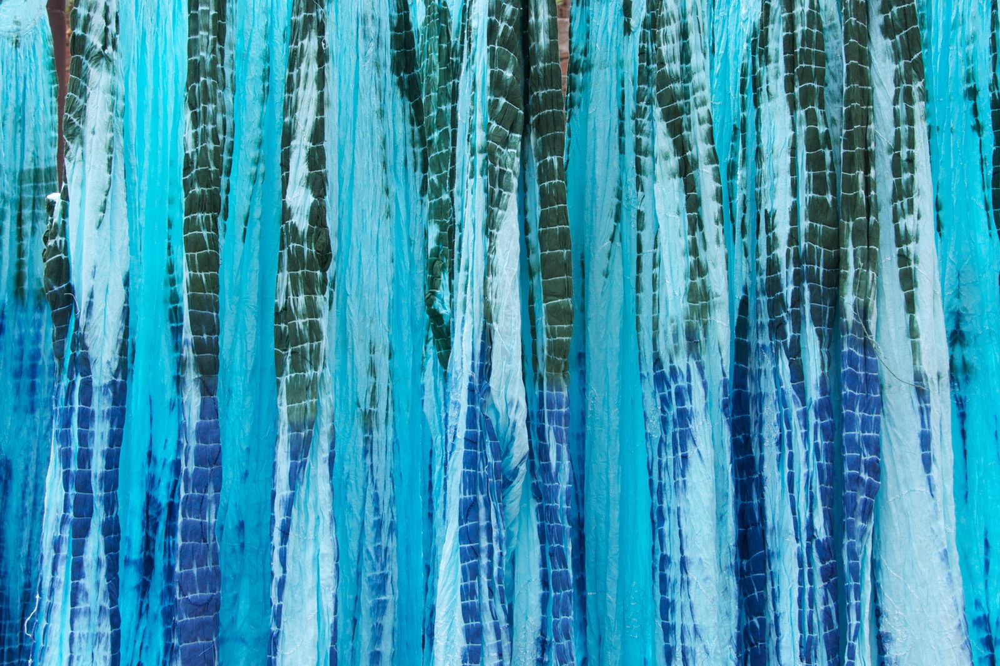

Our Story
Ten years of hand-tied colour from a small workshop in Lahore.

Where every knot is tied by hand
Noor (نور) means light. Our founder named the workshop after the way sunlight catches freshly dyed bandhani as it dries on the rooftop.
What began with one indigo vat and three artisans is now a team of fifteen, supplying fabric to designers, boutiques and thousands of customers across Pakistan. Our methods have not changed: we still tie, dye and dry every length by hand.
Our Values
Quality
Long-staple base cloth, colour-fast dyes and a meter-by-meter inspection before anything leaves the workshop.
Sustainability
Small-batch dyeing, recycled rinse water and plastic-free packaging wherever we can.
Craft
Every knot is tied by hand, keeping the bandhani and shibori traditions of our region alive.
Customers
Honest timelines, real photos and a team that answers on WhatsApp, before and after you buy.
Our Process
- 01
Design
Patterns are sketched and planned on paper, then marked onto the cloth with washable dye.
- 02
Material
We source lawn, cotton, silk, linen and chiffon from trusted mills and pre-wash every bolt.
- 03
Dyeing
Artisans tie, fold or clamp the fabric, then dye in small batches and dry it in the sun.
- 04
Quality Check
Every meter is untied, pressed and inspected for colour-fastness before it is cut for you.
“A machine can print a pattern. Only a hand can tie a knot that remembers where it came from.”Ayesha Noor, Founder
Meet the Team
Ayesha Noor
Founder & Creative Director
Started Noor Fabrics from her mother’s courtyard in 2014 and still approves every new design.
Bilal Ahmed
Master Dyer
Twenty years with indigo and natural dyes; leads our team of twelve artisans.
Sana Iqbal
Custom Orders Lead
Works with designers and boutiques to turn a mood board into a finished bolt of fabric.
Photo Credits
All photographs are real, free-to-use images from Pexels (Pexels License) or Wikimedia Commons. They are used here for demonstration only and would be replaced with Noor Fabrics’ own product photography.
| File | Photographer | License | Link |
|---|---|---|---|
| hero-1.jpg | Muhammed Zeya | Pexels License | Source |
| hero-2.jpg | Jon Connell | CC BY 2.0 | Source |
| product-mystic-forest.jpg | Ramkumar Kalyani | CC BY-SA 4.0 (cropped) | Source |
| product-ocean-wave.jpg | Cc Liu | Pexels License | Source |
| product-sunset-bloom.jpg | Dr. Matias Langer | CC BY-SA 3.0 | Source |
| product-rainbow-spiral.jpg | Katie Rainbow | Pexels License | Source |
| product-earth-tones.jpg | Mike Murray | Pexels License | Source |
| product-bright-sunset.jpg | Tamanna Rumee | Pexels License | Source |
| product-purple-haze.jpg | Mandayamr | Public domain | Source |
| product-midnight-galaxy.jpg | Teona Swift | Pexels License | Source |
| cat-cotton.jpg | La Photography | Pexels License | Source |
| cat-silk.jpg | Mikhail Nilov | Pexels License | Source |
| cat-linen.jpg | Robert Grant | Pexels License | Source |
| cat-men.jpg | Faruk Tokluoğlu | Pexels License | Source |
| cat-women.jpg | Matazu multimedia | Pexels License | Source |
| story-dyeing.jpg | Teona Swift | Pexels License | Source |
| gallery-1.jpg | Katie Rainbow | Pexels License | Source |
| gallery-2.jpg | Katie Rainbow | Pexels License | Source |
| gallery-3.jpg | Steven Falconer | CC BY-SA 2.0 | Source |
| gallery-4.jpg | Felix Schickel | Pexels License | Source |